|
Гомель. В стране безопасности под названием «Детство» Оглядываясь назад, в детство, вспоминаем, как правило, только самое лучшее! В глубине души каждого человека живет теплое детское воспоминание, греющее его. Наверное, такие воспоминания и дают нам силу, положительную энергию, заряд бодрости. Конечно, каждый из нас размышлял над понятием что такое «счастливое детство»? Вот и работники Гомельского городского отдела по чрезвычайным ситуациям решили узнать у ребят их мнение, посетив дошкольные учреждения города Гомеля в рамках республиканской акции «Каникулы без дыма и огня». − Детство − это радость, подарки, приятные моменты, отдых, веселье, игры, − прокричал Коля, мальчишка из старшей группы. − А с чем ещё ассоциируется ребята у вас детство? − поинтересовались пропагандисты городского отдела. И тут прозвучал ответ, который стал «отправной точкой» для начала мероприятия, очень взрослый ответ девочки 5 лет по имени Варя: − Ну, если сегодня у нас в саду МЧС, значит, с безопасностью! − Совершенно верно! В первую очередь детство должно быть безопасным! Именно поэтому, мы вместе с вами и нашими помощниками, героями мультсериала «Волшебная книга», отправимся в путешествие по стране безопасности под названием «Детство» − пояснили ребятам спасатели. Мальчишкам и девчонкам в игровой форме рассказывали о правилах безопасности дома, на улице и на воде. С помощью ярких обучающих картинок «Рюкзачок безопасности» ребята изучали опасные ситуации и находили выход из них. Помимо этого, играли в безопасные крестики-нолики, с увлечением складывали тематические пазлы с персонажами мультсериала, имитировали бросание спасательного круга в игре «Кольцо спасения» и даже почувствовали себя «настоящими» водителями автолестниц. − А сегодня мы будем смотреть следующую серию мультика «Волшебная книга»? В прошлый раз мы смотрели про безопасность дома. – поинтересовался у спасателей Миша, мальчишка из средней группы. − Конечно, будем, − отметили работники МЧС, немедля включив серию «Правила поведения на водоёмах». После просмотра мультсериала, пропагандисты проговорили с ребятами номера службы спасения и правила вызова спасателей, а также отработали на практике действия при случае возникновения пожара. Закрепляющей частью мероприятия стала подвижная игра «Спасатели» и вручение тематических буклетов. МЧС напоминает: Уважаемые родители! Только от вас зависит, будет ли безопасным, а значит счастливым детство вашего ребенка! Будьте примером и начните с себя, соблюдая правила безопасности. |
| 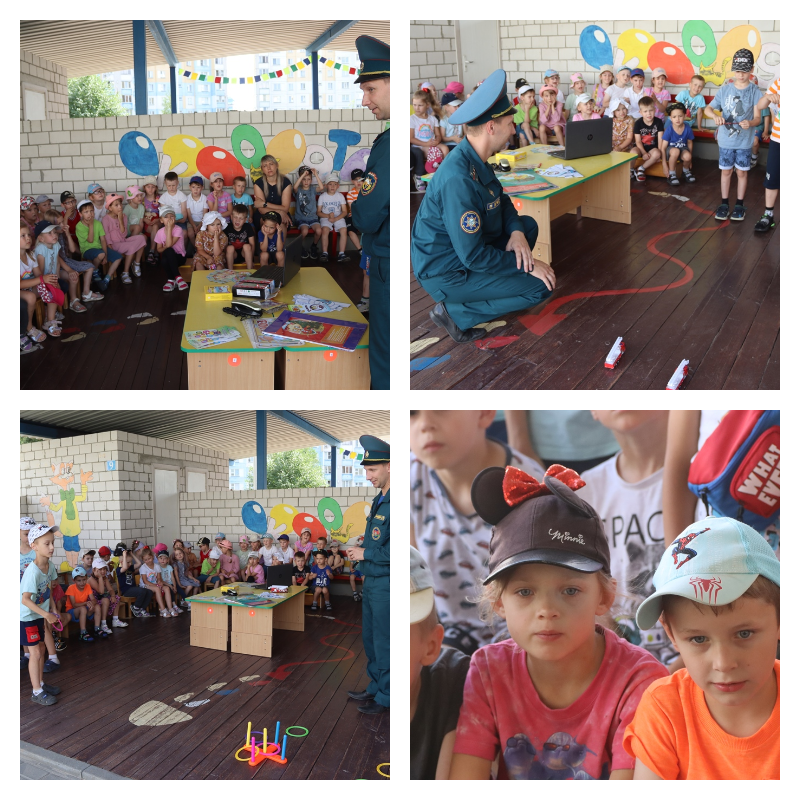 | 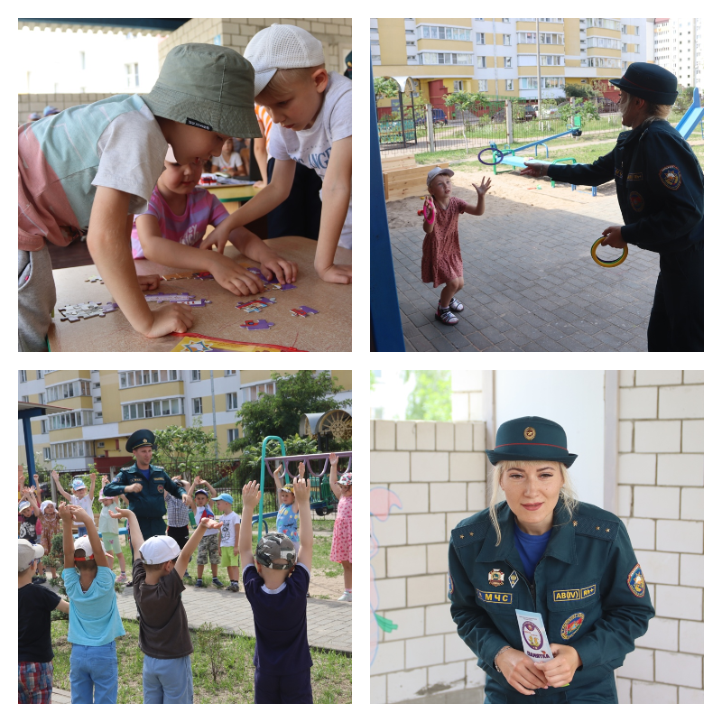 |
| 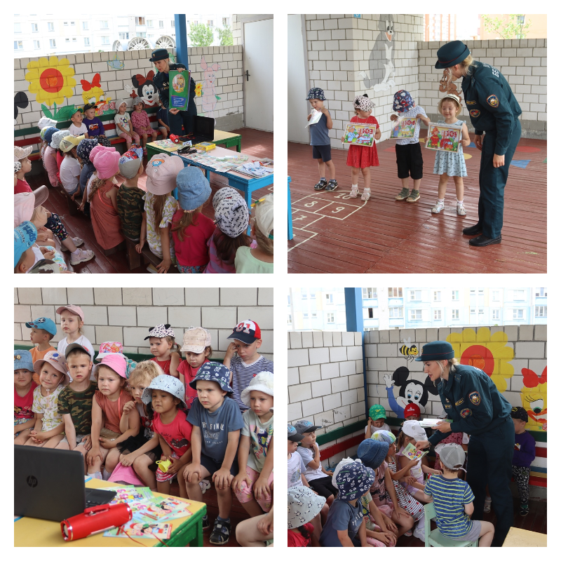 | 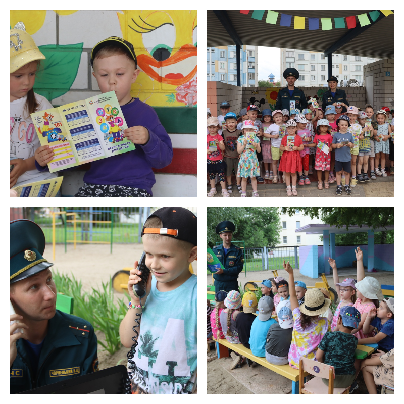 |
| 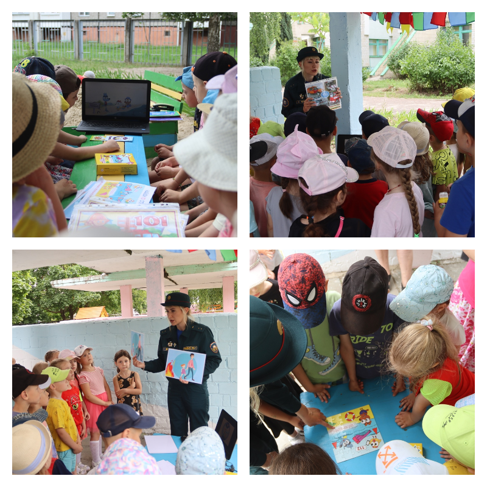 |
 |
Обратите ОСОБОЕ внимание - отдыху у воды! Одна из проблем во время плавания – это чувство меры, которое многие теряют, что приводит к переохлаждению организма. Комфортной для купания считается вода, температура которой не ниже 18 градусов со знаком плюс, и ясная безветренная погода (от 25 градусов тепла). Довольно частое происшествие при купании – судорога. Почувствовав, что ногу свело, главное – не теряться. Нужно сделать глубокий вдох и погрузиться в воду с головой. Затем крепко ухватить большой палец и тянуть ступню на себя, пока нога не выпрямиться полностью. После этого лучше всего плыть к берегу. |
|
Еще одна опасность – водоворот. Чтобы выбраться из него, надо набрать как можно больше воздуха в легкие, погрузиться в воду и, сделав рывок в сторону течения, всплыть на поверхность. Если же попали в сильное течение, не плывите против него, выбирайтесь на берег. Нередки случаи, когда купаясь, человек запутывается в водорослях. Справиться с зарослями несложно – держась на плаву, надо спокойно подтянуть ноги и осторожно освободиться от них. Если вы поняли, что начинаете тонуть, нужно попытаться перевернуться на живот или на спину, раскинуть как можно шире руки и ноги. Лежа на спине дышать нужно медленно и глубоко. А чтобы сделать новый вдох, лежа на животе, следует поднять голову, а затем выдыхать в воду. Держаться на плаву можно, если загребать воду руками под себя. Таким образом, немного отдохнув, нужно выбираться к ближайшему берегу. Если вы видите тонущего человека, первым делом нужно позвать на помощь окружающих или спасателей. Можно бросить спасательный круг или веревку с узлом на конце. Если же вы хорошо плаваете, можно добраться до горе-пловца самостоятельно. Приблизившись к утопающему, обхватите его сзади за плечи и плывите с ним обратно. Постарайтесь избежать попыток, когда тонущий пытается ухватиться за вас. Если утопающий без сознания, то тащить на берег его надо, взяв рукой под подбородок, чтобы лицо постоянно находилось над поверхностью воды. Затем нужно вызвать «скорую» и приступать к оказанию первой помощи. Запрещается:
Утопление – одна из причин детской смертности в летний период. Водные процедуры малышей должны проходить в строго отведенных местах и обязательно под контролем взрослых. Ни в коем случае не отпускайте детей купаться самостоятельно! Учите их плавать и соблюдать меры безопасности! МЧС информирует: в случае чрезвычайной ситуации не паникуйте, звоните по телефону 101 или 112! |
|
6 июня стартует республиканская акция «Каникулы без дыма и огня!»
Главная цель акции – предупреждение возникновения пожаров по причине детской шалости с огнем, гибели и травматизма детей. Она будет проходить с 6 июня по 18 августа в летних оздоровительных и пришкольных лагерях, где основной ее аудиторией станут школьники разных возрастов. Три месяца лета спасатели будут обучать детей и взрослых правилам безопасности в пришкольных и летних оздоровительных лагерях, наполняя досуг участников множеством современных, увлекательных и в то же время полезных обучающих мероприятий. «День МЧС», «МЧС-ЛЭНД», игра «Школа юных спасателей», тематические театрализованные представления, викторины, онлайн-квизы по безопасности, мастер-классы, экскурсии по центрам безопасности, музеям и пожарным аварийно-спасательным частям и еще множество разнообразных мероприятий от пропагандистов МЧС позволят ребятам блеснуть эрудицией и смекалкой, проявить творческий потенциал, испытать свои силу и выносливость, но самое главное – усвоить, повторить и закрепить правила безопасности жизнедеятельности. Так же демонстрировать тематические видео и мультипликационные фильмы от МЧС, раздавать наглядно обучающую продукцию. Помогать пропагандистам МЧС в проведении мероприятий акции будут активисты Белорусской молодежной общественной организации спасателей-пожарных, студенты, представители ОСВОД, Белорусского добровольного пожарного общества, журнала «Юный спасатель» и др. Кроме того, пропагандисты проведут обучение правилам пожарной безопасности с работниками детских оздоровительных и пришкольных лагерей, в т.ч. дежурного персонала. МЧС напоминает: уважаемые родители, дедушки и бабушки! Ни в коем случае не оставляйте малышей без присмотра! Не позволяйте детям играть с огнем, держите спички и зажигалки в недоступных местах, не подпускайте детей к окнам и балконам. Напоминайте детям правила безопасного поведения у воды, следите, чтобы ребенок не купался без присмотра. Помните, что опасность представляют не только водоемы, но и колодцы, ванны, ведра с водой и декоративные пруды. Ведь сохранение жизни и здоровья детей – это общая цель всех взрослых! Участвуйте в мероприятиях МЧС и будьте в безопасности! |

|
Акция «За безопасность вместе» стартует в республике 10 апреля Статистика ежегодно свидетельствует, что преобладающей причиной гибели людей от пожаров в жилищном фонде является так называемый человеческий фактор – беспечные, неосторожные действия граждан, незнание правил либо осознанное пренебрежение мерами безопасности. 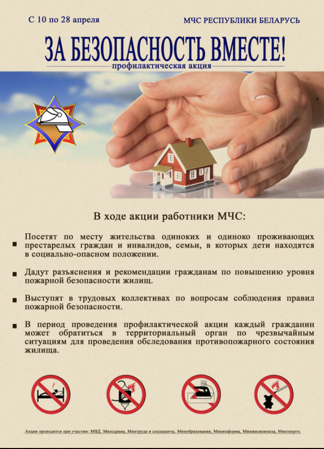 В целях повышения уровня культуры безопасности среди населения Министерством по чрезвычайным ситуациям в период с 10 по 28 апреля организовано проведение уже ставшей традиционной республиканской пожарно-профилактической акции по предупреждению пожаров и гибели людей от них в жилищном фонде в весенне-летний пожароопасный период «За безопасность вместе». К мероприятиям присоединятся Министерство внутренних дел, Министерство труда и социальной защиты, Министерство образования, Министерство информации, Министерство жилищно-коммунального хозяйства, Министерство здравоохранения и Министерство энергетики, Белорусское добровольное пожарное общество В ходе акции акцент будет сделан на обследование противопожарного состояния домовладений одиноких и одиноко проживающих пожилых граждан, инвалидов, семей, в которых дети находятся в социально опасном положении, проведение с ними инструктивно-разъяснительной работы по соблюдению правил пожарной безопасности, а также информирование населения о возможностях государственных организаций по оказанию услуг по обеспечению их безопасности. В рамках акции обратиться в территориальные органы и подразделения по чрезвычайным ситуациям для проведения обследования противопожарного состояния своего жилья может любой желающий. |
Напоминаем, что в соответствии с
законодательством Республики Беларусь
ответственность за соблюдение требований
пожарной безопасности в жилых домах,
принадлежащих гражданам на праве частной
собственности, возложена на их
собственников. Принимайте участие в акции и будьте в безопасности! |
| 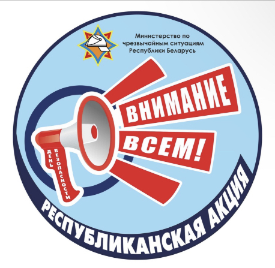 |
«День безопасности. Внимание всем!» Республиканская акция МЧС стартует 27 февраля |
Акция пройдет в два этапа. Первый этап с 27 февраля по 10 марта охватит все учреждения образования. Спасатели проведут здесь уроки безопасности. Малышам в игровой форме объяснят, как не допустить ЧС и как себя вести в случае ее возникновения, покажут мультфильмы «Волшебная книга МЧС» и «Спецотряд 112». Старшим ребятам расскажут об основных причинах пожаров, действиях по сигналу «Внимание всем!», а также напомнят о соблюдении правил безопасности в период весенних каникул. Подростки поучаствуют в квест-игре «Чрезвычайная ситуация» и посмотрят познавательные видеофильмы от МЧС. После занятий состоится учебная эвакуация.
В преддверии весенних каникул особый акцент будет сделан на родителей, которым спасатели подробно расскажут о чрезвычайных ситуациях с детьми и приведут примеры реальных случаев с их участием. Также в профилактической программе - просмотр видеофильмов «Не оставляйте детей одних» и «Цена мгновения», участникам раздадут наглядно-изобразительную продукцию.
Второй этап акции запланирован с 14 по 18 марта. Он будет нацелен на жильцов общежитий, трудовые коллективы, посетителей мест массового пребывания. Так, жильцов общежитий обучат действиям при сигнале «Внимание всем!», напомнят правила поведения при пожаре. В местах встреч будет организована фотовыставка «Назови причину», где участникам предложат рассмотреть фотографии с мест реальных пожаров в быту, назвать причины произошедшего и порассуждать, как можно было избежать трагедии.
В местах массового пребывания людей (кинотеатрах, торговых центрах) МЧС развернет интерактивные площадки: выставка сгоревших электроприборов и домашней утвари, «Опасности в квартире», «Безопасная эвакуация», «Правила поведения в толпе», «Эвакуационные знаки», «Экстренная помощь» и другие. В интересной и запоминающейся форме людям расскажут об основных правилах безопасности, предложат на практике продемонстрировать действия в случае различных ЧС. Все участники акции получат яркую печатную продукцию - буклеты, брошюры, наклейки, закладки и календари.
Участвуйте в мероприятиях от спасателей! Ведь соблюдение основных правил пожарной безопасности – залог вашего благополучия.
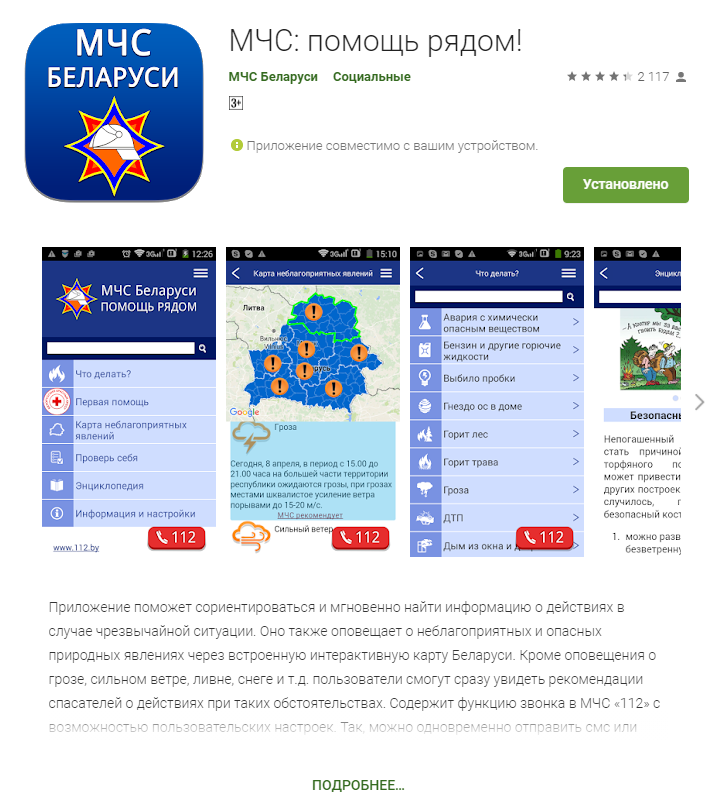Мобильное приложение «МЧС: помощь рядом!»
В виду большого количества информации быстро найти достоверную в наше время достаточно непросто. Что делать если провалился под лёд? А если слышите запах дыма? Вдруг кольцо застряло на пальце? Именно для такого рода вопросов Министерство по чрезвычайным ситуациям Республики Беларусь собрало всю необходимую и достоверную информацию о безопасности в мобильном приложении, которое вы можете легко установить на свой гаджет с GooglePlay Market или APP Store.
Данное приложение поможет сориентироваться и мгновенно найти информацию о действиях в случае чрезвычайной ситуации. Также оно своевременно будет оповещать вас о неблагоприятных и опасных природных явлениях через встроенную интерактивную карту Беларуси,которую можно найти во вкладках. Кроме оповещения о грозе, сильном ветре, ливне, снеге и т.д. пользователи смогут сразу увидеть рекомендации спасателей о действиях при таких обстоятельствах. Полезное приложение содержит функцию звонка в МЧС «112» с возможностью пользовательских настроек. Так, можно одновременно отправить СМС или настроить тревожную кнопку на заданный номер – например, врачу или родным. Это позволит связаться в экстренных случаях с нужным человеком, что особенно важно для людей с различными заболеваниями. В последней версии приложения реализованы поиск, есть возможность проверить полученные знания в тестах, прочитать статьи в разделе «Энциклопедия». Желающие могут принять участие в рейтинге МЧС на прохождение тестов и отправить координаты, если вдруг потерялись в лесу.
Устанавливайте мобильное приложение «МЧС:помощь рядом!» и изучайте полезную информацию.
| 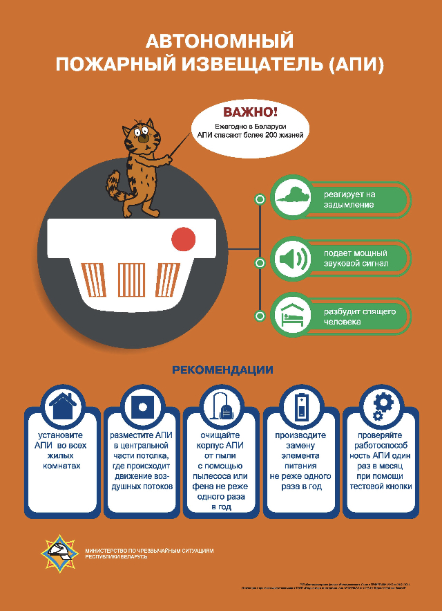 |
Обезопасьте себя и своих близких – установите автономный пожарный извещатель! 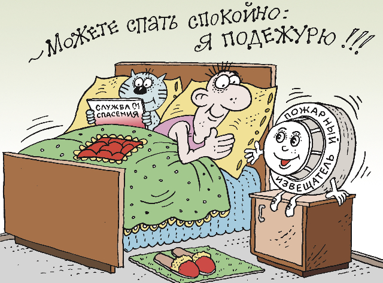 |
О существовании автономных пожарных извещателей сегодня знает каждый. Необходимость их установки уже давно не вызывает сомнений, однако, все еще находятся люди, которые жертвуют собственной безопасностью в угоду сделанному ремонту и сомнительной красоте, которую данный прибор может якобы испортить.
Чтобы обезопасить себя и своих близких, предлагаем Вам задуматься об установке в своем жилье автономного пожарного извещателя.
Дайте себе ответы на такие вопросы: «Хотели бы Вы вовремя узнать о начинающемся пожаре в своей квартире или доме? А есть ли шанс обнаружить пожар ночью, когда человек спит и не чувствует запаха дыма? Казалось бы, ответ очевиден.
Но, в тоже время большинство людей пребывают в уверенности, что пожар может случиться где угодно, но только не у них, многие говорят, что мы не пьем и не курим, поэтому пожарный извещательнам не нужен. А ведь пожары случаются не только по этой причине: короткое замыкание электропроводки, не отремонтированная вовремя печь, забытый утюг или готовящаяся пища на оставленной без присмотра плите, детская шалость с огнем – это далеко не полный перечень причин пожаров, которые постоянно фигурируют в сводках МЧС.
Практика показывает, что в домовладениях, оборудованных автономными пожарными извещателями, во много раз повышается уровень безопасности проживающих в них людей.
И согласитесь, что его стоимость несравнима с ценой тех последствий, к которым приводят пожары, уничтожая нажитое годами имущество, а порой, унося человеческие жизни.
Автономный пожарный извещатель чувствителен даже к незначительному задымлению в помещении, что способствует быстрому обнаружению возгорания на ранней стадии его развития. При появлении дыма он подает мощный звуковой сигнал, который способен оповестить и даже разбудить спящего человека.
Называется прибор автономным, поскольку его конструкция выполнена таким образом, что для работы ему не требуется подключение к электрической цепи и подсоединение к пульту управления. Внутри пластикового корпуса расположен источник питания – батарейка и компоненты, необходимые для обнаружения пожара и непосредственного оповещения о нем.
Для нормального функционирования нужно лишь периодически очищать прибор от пыли и своевременно менять элемент питания.
МЧС напоминает: установленный автономный пожарный извещатель – гарант Вашей безопасности! Оградите от беды себя и тех, кто вам дорог!
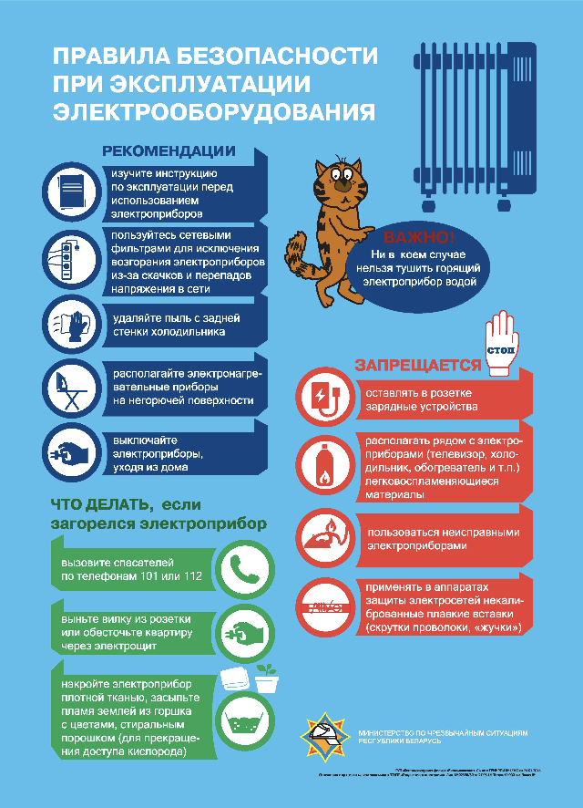
Как использовать электроприборы и не сжечь
квартиру
Давайте представим жизнь без вещей, к которым мы так привыкли. Жизнь без телевизора, играющего по вечерам на фоне. Нет ни микроволновки, позволяющей подогреть еду одним нажатием кнопки. О стиральной машине, которая экономит драгоценное время и остаток сил после рабочей недели, тоже можете забыть. Холодильник, мобильный телефон и компьютер тоже канули в Лету. Звучит как антиутопия, не правда ли? Большинство людейскорее всего даже не захочет представлять такую трагическую ситуацию или впадет в истерику.
Удобные и практичные электроприборы в современной жизни делают нашу жизнь намного проще, комфортнее. Но появляется и другой вопрос – безопасного использования этих устройств. Они могут не только помочь нам, но и, в случае недобросовестного обращения, испортить нам жизнь. Читать инструкции и выключать приборы из сети – дело немодное в XXI веке и считается пустой тратой времени.
«Пожар случится где угодно, но только не у меня». Некоторые люди подписываются экономить на своем здоровье, на качественных электроприборах. Готовы жить в домах, где электропроводка уже давно пережила жестокое испытание временем. Не знают или не хотят знать элементарные правила безопасности при использовании электрооборудования. Результат один – за «авось» они тратят накопленные деньги не на летний курорт, а на ремонт квартиры или дома. И очень повезет, если трагедия принесет только жилищные хлопоты.
Случай с относительно хорошим исходом произошел в Гродно в конце октября. Рано утром женщина вышла на кухню и обратила внимание на необычное гудение холодильника, из задней стенки которого вырывались клубы дыма. Женщина не растерялась: обесточила квартиру, вызвала спасателей и приступила к тушению. Обошлось все закопченными стенами, поврежденным электроприбором и испугом его владелицы.
Но есть и происшествия с трагичными последствиями. 14 марта в Мстиславле в сильно задымленном доме без признаков жизни был обнаружен 65-летний хозяин. Обогревался с помощью самодельного обогревателя, короткое замыкание которого и привело к пожару.
Чтобы ваши будни были не только комфортными, но и безопасными, рассказываем о важных правилах, которые необходимо соблюдать при использовании техники.
Приучите себя выключать электроприборы из сети
Так удобно прийти домой, взять пульт и одним нажатием включить телевизор, а заодно и поставить легким движением руки телефон на зарядку. Такая ситуация может продолжаться постоянно: днями и даже годами. В неработающих, но включенных в розетку электроприборах многие узлы находятся под напряжением, и от перегрева или замыкания они могут загореться в любой момент.
Техника не служит веками
Народный «лайфхак»: технику, повидавшую жизнь, мы отправляем на дачу. Наверняка многие даже не догадываются, но у нее существует срок эксплуатации. Насколько долговечно ваше устройство, можно узнать в инструкции, которую наверняка придется поискать среди других запылившихся вещей на балконе. Ящик Пандоры лучше не открывать: иногда старым вещам пора на покой
Перегружать электросеть – не лучшее решение
В один несчастный удлинитель мы включили все, что можно: компьютер, телевизор, обогреватель, а в Новый год еще украсили квартиру гирляндами. Уют и теплая атмосфера обеспечены, но когда в доме внезапно что-то загорится, то удивляться не стоит.
Чрезмерная нагрузка на электросеть может привести к перебоям в работе техники, а может произойти совсем неприятная ситуация – пожар в помещении. Запомните: чем меньше электроприборов работает одновременно, тем безопаснее.
Республиканская
акция МЧС
«Безопасность в
каждый дом» стартует 23
января
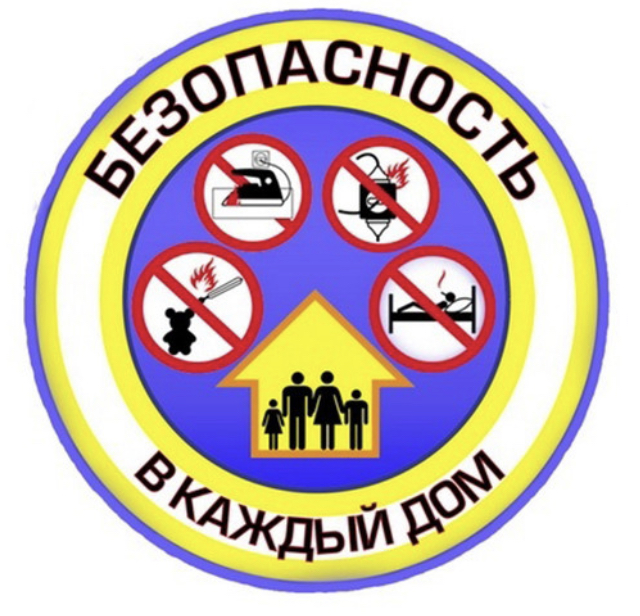
Основными причинами возникновения чрезвычайных ситуаций в жилом секторе по-прежнему остаются неосторожное обращение с огнем, нарушение правил эксплуатации печного отопления и электрооборудования, детская шалость с огнем. В большинстве случаев подобные происшествия являются результатом человеческой беспечности и пренебрежения правилами безопасности.
С целью предупреждения пожаров и гибели людей от них с 23 января по 10 февраля в республике пройдет акция МЧС «Безопасность – в каждый дом!», она состоит из 3 этапов.
На первом из них с 23 по 27 января в центре внимания спасателей будут лица, злоупотребляющие алкоголем и ведущие асоциальный образ жизни, а местами проведения станут отделения дневного пребывания наркодиспансеров, центры безопасности, а также опорные пункты общественного правопорядка и пункты приема вторсырья. Мероприятия пройдут в формате «Трезвый взгляд на безопасность» – именно под таким девизом объединят свои усилия в профилактике пожаров спасатели, представители «Красного Креста», УВД, духовенство, ветераны МЧС и добровольцы.
На втором этапе, который пройдет с 30 января по 8 февраля, внимание организаторов акции сместится на престарелых граждан с активной жизненной позицией, жителей сельских населенных пунктов, студентов, а также учащихся выпускных классов школ. В рамках широкомасштабного мероприятия «Скарбонкабяспекi» для молодёжи запланированы мероприятия ток-шоу «Диалог», игра «Музыкальная битва за безопасность», викторина «Где логика?», интеллектуальная игра «Брейн-ринг», а также игра-конкурс «Детективное агентство МЧС», которые пройдут на базе сельских домов культуры. А для старшего поколения спасатели подготовили немало интересных тематических бесед, конкурсов, квестов, в том числе будет организована работа интерактивных площадок «SOS» и «Опасности в квартире», «Безопасная эвакуация» и «Правила поведения в толпе», «Эвакуационные знаки» и «Экстренная помощь», а также «Опасная печь» и «Интерактивная карта ЧС». Не оставят без внимания и посетителей территориальных центров социального обслуживания. К пропагандистам МЧС при организации мероприятий акции присоединятся также ребята из БМООСП, работники БДПО.
С 9 по 10 февраля пройдет финальный этап акции. Традиционно спасатели развернут интерактивные площадки в местах массового пребывания людей, а также подготовят концертную программу, участие в которой примут активисты БМООСП, коллективы художественной самодеятельности и знаменитости.
Во время акции также будут задействованы возможности работы в онлайн-формате через социальные сети и мессенджеры: занятия, лекции через интернет, адресная рассылка буклетов и безопасной корреспонденции, а также телефонное общение в формате «На связи спасатели…» для людей с ограниченным контактом. Кроме этого, на протяжении всех этапов акции МЧС будет активно сотрудничать со средствами массовой информации: в период проведения мероприятия на телевидении будут транслироваться тематические видеоролики, радиоэфир пополнится аудиоинформацией, а в печатных СМИ разместятся статьи, направленные на предупреждение чрезвычайных ситуаций.
| окунуться в прорубь на Крещение? Рекомендации спасателей | |
| 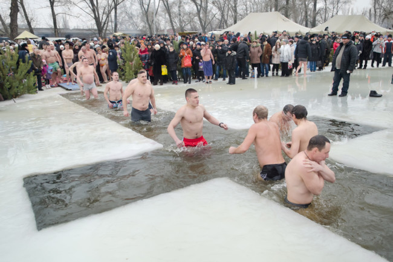 | 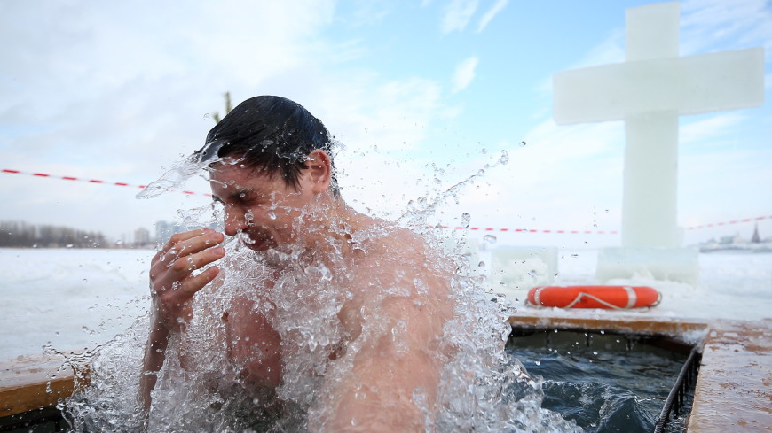 |
|
19 января в Беларуси отмечается православный праздник Крещения. Именно в этот праздник, по старинной традиции, готовятся окунуться в прорубь. Считается, что крещенская вода приносит духовное и телесное здоровье. В преддверии праздника работники МЧС призывают делать это в специально организованных местах. Чтобы не подвергать свою жизнь опасности, ни в коем случае не следует купаться в состоянии алкогольного опьянения, нырять и плавать под водой, подавать крики ложной тревоги, собираться группами на льду у края полыньи, заходить за ограждения. Специалисты напоминают, что купание детей допускается только с родителями или взрослыми родственниками. Дети должны быть на расстоянии вытянутой руки, под постоянным присмотром взрослых. Рекомендации по окунанию:
|
|
| Берегите себя! Желаем вам и вашим близким только безопасного погружения! |
| 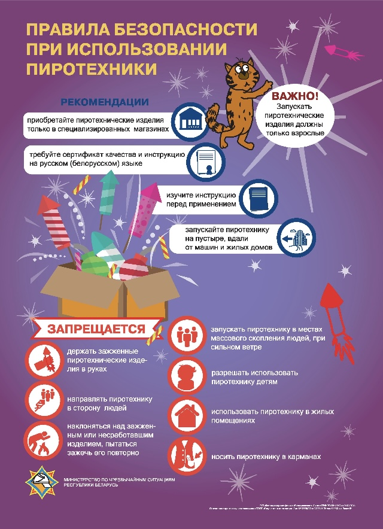 | 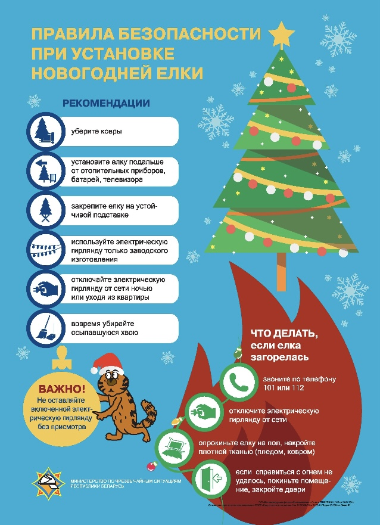 |
|
Подготовка к новогодним праздникам Новогодняя елка Установка. Елка должна стоять на прочном основании и быть крепко закреплена, чтобы ее не могли уронить ни маленькие дети, ни внезапно решивший поиграть с украшениями кот. Елку следует разместить подальше от батарей отопления и электроприборов. Стоит предусмотреть расстояние и до детской кроватки – ночью объемный силуэт дерева может испугать малыша. Самое удачное место – угол вдали от прохода. Там ель не будет никому мешать. При такой мере безопасности можно быть уверенным – даже если елка будет задета во время детской игры, она не упадет и никого не травмирует. Рядом с елью нельзя ставить подсвечники со свечами. Любое неосторожное движение может привести к пожару. Украшение. Не делайте «снег» из ваты или любых других легко воспламеняющихся веществ: неудачное попадание бенгальского огня – и вся конструкция заполыхает. При украшении новогодней елки не пользуйтесь свечами: открытый огонь может стать неприятной «изюминкой» праздника. Воздержитесь от самодельных игрушек из горючих материалов. Немного о гирляндах и иллюминации. Гирлянда должна быть качественной, сертифицированной, безопасной, а ее изоляция – плотной, гибкой и без внешних повреждений, лампочки – закрытыми. Коробка переключателя режимов не должна легко прогибаться. Работу гирлянды нужно проверить заранее перед тем, как её вешать, обратив особое внимание на проблемные места: соединение провода с вилкой, провода – с переключателем режимов, провода – с лампочками. Наряжая елку, старайтесь не опускать гирлянды близко к полу, поскольку их могут зацепить дети или домашние животные. Елка с новогодними игрушками и украшениями может опрокинуться и ударить током. Также одно из важных правил – не оставляйте гирлянды включенными на ночь или в то время, когда дома никого нет. Если говорить об иллюминации, то оформление должно производиться специалистами, имеющими соответствующую квалификацию. Не устраивайте световые эффекты с применением химических и других веществ, бенгальских огней и хлопушек – от них может загореться елка. Пиротехника От простых хлопушек до суперсовременных фейерверков и петард – ассортимент пиротехники впечатляет своим разнообразием. Особенно популярной такая продукция становится накануне зимних праздников – любителей «зажечь» в новогоднюю ночь всегда немало. Однако иногда подобное «веселье» оборачивается серьезными травмами. Причин может быть несколько: сомнительное качество товара, неправильное хранение или нарушение правил эксплуатации. Но со всем можно справиться, главное – подойти к этому ответственно. Покупка. В первую очередь, забудьте о пиротехнических изделиях из-под полы – покупайте их только в специализированных магазинах. Не соглашайтесь на более выгодные предложения – глаза и руки в случае возникновения нештатной ситуации обойдутся дороже. Попросите у продавца сертификат безопасности. Обратите внимание на срок годности (как правило, пиротехника хранится не более трех лет) и инструкцию (обязательно на белорусском или русском языке), которую необходимо изучить. Рассмотрите упаковку и само изделие: дефектов быть не должно, фитиль – заклеен или спрятан под обертку. Купил. Где хранить? Помещение должно быть сухим и без каких-либо источников огня. Также нельзя держать пиротехнику возле батарей отопления. Например, балкон или кухня в качестве склада совсем не подходят: изделие либо отсыреет (просушивать его не стоит) и в лучшем случае не сработает, а в худшем – выстрелит с задержкой в самый неподходящий момент. Или наоборот, постепенно нагреваясь, сработает самопроизвольно. Запуск. Самый ответственный момент – пиротехника в действии. Не надейтесь на свои знания из прошлого – прежде чем запускать, обязательно прочитайте инструкцию еще раз: у каждого изделия свои особенности, будьте внимательны. Если же пиротехника не сработала – не нужно поджигать ее снова, не наклоняйтесь над ней, чтобы выяснить, что случилось. Из-за некачественной пиротехники или неправильного обращения с ней, брошенных окурков, а также, возможно, запущенных «китайских фонариков» может загореться балкон – этого можно избежать, всего лишь закрыв балконную раму. МЧС информирует: Приобретать пиротехнику допускается лицам, достигшим 16 летнего возраста и только в специализированых магазинах, имеющих сертификаты соответствия. Перед применением изучите инструкцию (которая содержит: ограничения по условиям применения изделия; способы безопасного запуска; размеры опасной зоны; условия хранения, срок годности и способы утилизации); Перед тем как поджечь фитиль вы должны точно знать, где у изделия верх и откуда будут вылетать горящие элементы; Запускайте пиротехнику вдали от жилых домов и машин, желательно на пустырях (площадка для запуска должна быть ровной, над ней не должно быть деревьев, линий электропередач и других препятствий). Запрещается: - направлять фейерверки в сторону людей и животных; - запускать петарды детям; - помещать петарду в замкнутый объем: банку, ведро, бутылку; - разбирать петарду; - сжигать фейерверки на кострах; - повторно поджигать петарды, если те не сработали; - держать изделие в руках после поджога; - использовать в помещениях, зданиях, сооружениях, а также на крышах, балконах и лоджиях, на территориях взрывоопасных и пожароопасных объектов, возле линий электропередач; - применять изделия с истекшим сроком годности. |
Осторожность – залог безопасности!
Ссылка на видео: [https://youtu.be/OAFKdKJv7Jo]
Огонь – это один из самых опасных и неконтролируемых видов природных стихий.И несмотря на то, что человек в XXI веке всё же «приручил» огонь, пожары остаются самым распространенным видом чрезвычайных ситуаций. Ежедневно пролистывая ленту новостей, то и дело останавливаешься на огненных событиях. «Уничтоженоимущество», «Повреждено здание и техника на участке», «Ущерб от пожара составил… Nрублей», но самое печальное, что на ряду с материальным ущербом, погибают люди. Перечень причин, по которым происходят пожары, возглавляет неосторожное обращение с огнем, порядка 46% от общего количества. С начала 2022 года в городе Гомеле произошло 98 пожаров, на которых погибло 10 человек.Виной всему легкомысленное поведение человека и халатное отношение к безопасности в целом. Также анализируя статистику, можно сделать вывод, что большинство пожаров приходится на жилой фонд. Человек, находясь дома, подсознательно чувствует себя в безопасности, и зачастую способен на весьма опасные манипуляции с источниками открытого огня: курить везде, где заблагорассудится – на диване, в месте для сна, совершенно не думая о том, что можно легко уснуть от усталости, позднего времени суток, нередко алкогольного опьянения и как показывает практика – уже никогда не проснуться! Помимо этого курить на балконе, отправляя непотушенный окурок на произвол судьбы и закону физики в свободное падение. Нередко такой «нежданный гость» прилетает на балкон или лоджию, где сушатся вещи и хранится имущество, устраивая огненную феерию. Неосторожность в обращении с открытым огнем даже в ходе проявления своих кулинарных способностей, также становится причиной пожаров и травмирования на них людей. Стоит отметить и тот печальный факт, что помимо виновника трагедии, страдают и невинные люди – соседи, близкие и родные, порой так же погибая в пожарах от дыма, пришедшего в их квартиру через оконные проёмы или вентиляционные каналы.
Ещё одной из причин возникновения пожаров является шалость детей с огнём. Оставленная без родительского вниманиядетвора устраивает огненные эксперименты, которые заканчиваются далеко не овациями зрителей, а звуком спешащих на помощь пожарных расчётов.
Для предупреждения возникновения подобных пожаров, вызванных неосторожным обращением с огнём, необходимо соблюдать элементарные правила пожарной безопасности:
-не оставлять готовящуюся на плите пищу без присмотра;
-тщательно тушить спички, окурки, и ни в коем случае не вбрасывать их из окна, а складывать в жестяную банку, наполненную водой;
- не курить в постели, особенно в состоянии алкогольного опьянения;
- уходя из дома выключать электроприборы, перекрывать газ и закрывать окна;
- убрать спички и зажигалки из поля зрениядетей и никогда не оставлять их одних.
Будьте внимательны и осторожны в обращении с огнём. Поговорите со своими родными и близкими, а также соседями о соблюдении правил пожарной безопасности и недопущении их нарушения. Установите в своих домовладениях автономный пожарный извещатель, который своевременно оповестит Вас о пожаре.
Помните, сохранность вашей жизни и вашего имущества зависит только от Вас! В случае пожара звоните по телефону 101 или 112.
Обезопасьте
себя и своих близких –
установите автономный
пожарный
извещатель
О существовании автономных
пожарных извещателей сегодня знает каждый. Необходимость
их установки уже давно не вызывает сомнений, однако, все
еще находятся люди, которые жертвуют собственной
безопасностью в угоду сделанному ремонту и сомнительной
красоте, которую данный прибор может якобы
испортить.
Чтобы обезопасить себя и своих близких, предлагаем Вам
задуматься об установке в своем жилье автономного
пожарного извещателя.
Дайте себе ответы на такие вопросы: «Хотели бы Вы
вовремя узнать о начинающемся пожаре в своей квартире
или доме? А есть ли шанс обнаружить пожар ночью, когда
человек спит и не чувствует запаха дыма? Казалось бы,
ответ очевиден.
Но, в тоже время большинство людей пребывают в
уверенности, что пожар может случиться где угодно, но
только не у них, многие говорят, что мы не пьем и не
курим, поэтому пожарный извещатель нам не нужен. А ведь
пожары случаются не только по этой причине: короткое
замыкание электропроводки, не отремонтированная вовремя
печь, забытый утюг или готовящаяся пища на оставленной
без присмотра плите, детская шалость с огнем – это
далеко не полный перечень причин пожаров, которые
постоянно фигурируют в сводках МЧС.
Практика показывает, что в домовладениях, оборудованных
автономными пожарными извещателями, во много раз
повышается уровень безопасности проживающих в них
людей.
И согласитесь, что его стоимость несравнима с ценой тех
последствий, к которым приводят пожары, уничтожая
нажитое годами имущество, а порой, унося человеческие
жизни.
Автономный пожарный извещатель чувствителен даже к
незначительному задымлению в помещении, что способствует
быстрому обнаружению возгорания на ранней стадии его
развития. При появлении дыма он подает мощный звуковой
сигнал, который способен оповестить и даже разбудить
спящего человека.
Называется прибор автономным, поскольку его конструкция
выполнена таким образом, что для работы ему не требуется
подключение к электрической цепи и подсоединение к
пульту управления. Внутри пластикового корпуса
расположен источник питания – батарейка и
компоненты, необходимые для обнаружения пожара и
непосредственного оповещения о нем.
Для нормального функционирования нужно лишь периодически
очищать прибор от пыли и своевременно менять элемент
питания.
МЧС напоминает: установленный автономный пожарный
извещатель – гарант Вашей безопасности! Оградите
от беды себя и тех, кто вам дорог!
|
«Не прожигай свою жизнь!» |
|
|
8 ноября стартует акция МЧС «Не прожигай свою жизнь!» 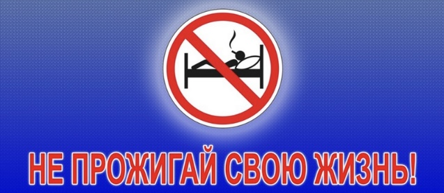 |
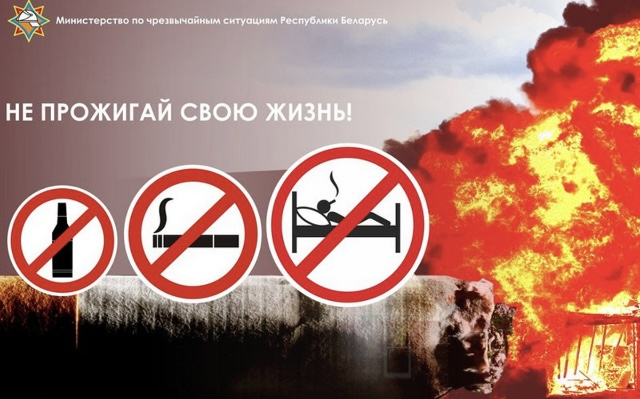 |
|
Привычка — действие, которое человек производит автоматически. Проще говоря, даже не задумываясь. Курение входит в список наиболее распространенных привычек и является одной из самых опасных. Курящий человек не всегда задумывается о последствиях, цена которых может оказаться неизмеримо больше, чем стоимость одной сигареты. А платить её зачастую приходится не тому, кто курит, а его родным, друзьям или даже посторонним людям. По статистике, 7 из 10 пожаров в жилом фонде происходят по вине неосторожных курильщиков. Не стоит думать, что лично вас эта проблема не коснётся, ведь огню безразлично, кому наносить вред, но предупредить печальный исход в ваших силах. Для привлечения внимания к проблеме пожаров по причине неосторожного обращения с огнём при курении с 8 по 18 ноября по всей стране пройдёт акция «Не прожигай свою жизнь!». Мероприятия акции пройдут в 2 этапа. Первый продлится с 8 по 11 ноября и затронет пункты приёма вторсырья, а также промышленные предприятия, общежития и другие места большого скопления людей.Вниманию участников будут предложены тематические видеоролики об опасностях, которые таит в себе курение, возможность побеседовать со специалистом и задать ему интересующие вопросы. |
Кроме того, каждый желающий сможет принять участие в соревновании за звание знатока правил безопасности на тему безопасного обращения с огнём при курении и выиграть сувенирную продукцию. Второй этап будет проходить с 14 по 18 ноября в вузах, колледжах, лицеях, а также в центрах безопасности и других местах с массовым пребыванием людей. Участники смогут проявить себя в конкурсе КВН, соревновательной интеллектуальной игре «No smoking Quiz», конкурсе миниатюр и других викторинах. Темой всех вышеперечисленных мероприятий будет безопасность при обращении с огнём при курении. Это далеко не весь перечень мероприятий, поэтому стоит сходить самому и позвать с собой друзей, чтобы провести время приятно и полезно! В местах с массовым пребыванием людей и на открытых площадках пропагандисты МЧС проведут «Шоу без сигарет». В это время все желающие смогут отказаться от курения и поменять сигареты на ценные призы и подарки, а также сделать яркие фотографии с ростовой куклой и на фоне тематических стендов. Это далеко не всё, что ждёт участников акции «Не прожигай свою жизнь!». Поэтому присоединяйтесь к мероприятиям МЧС, чтобы победить в борьбе с пагубной привычкой и сделать свою жизнь безопаснее! |
|
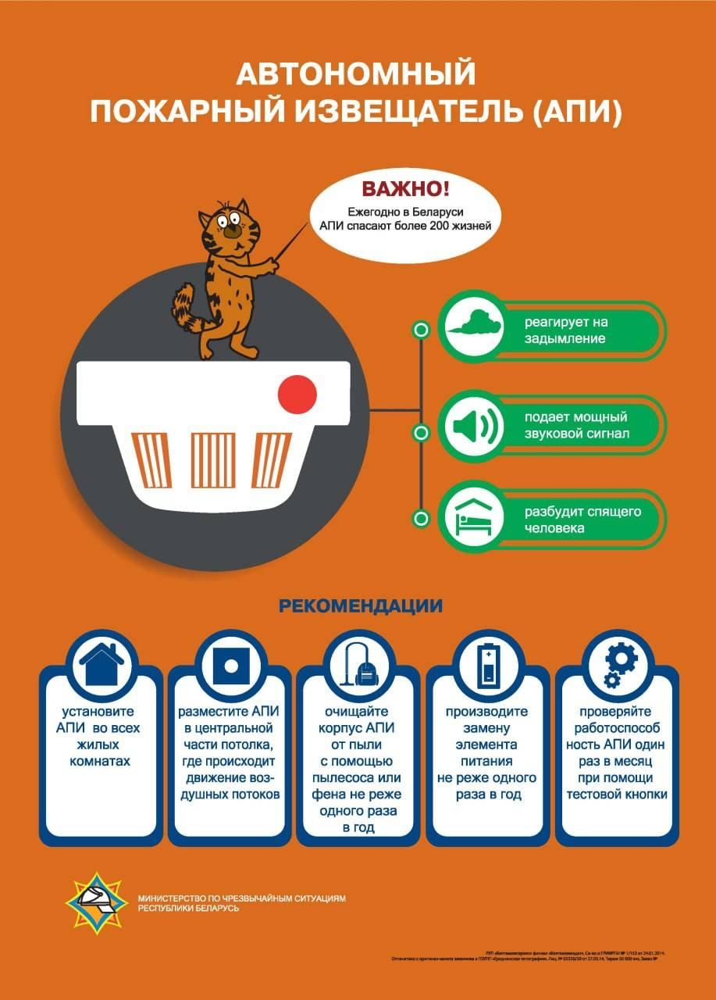 |
НЕОСТОРОЖНОЕ ОБРАЩЕНИЕ С ОГНЁМ !!!! |
|
90
процентов пожаров происходят
из-за беспечности человека.
|

Гомель. Как использовать электроприборы и не сжечь квартиру
 |
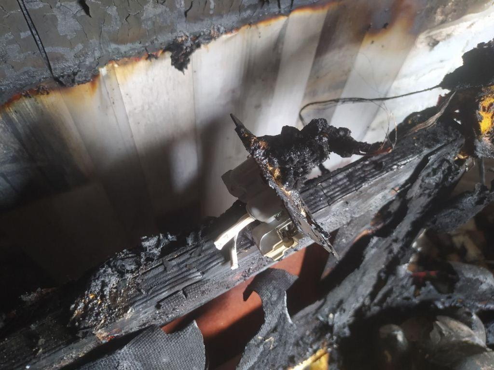 |
| 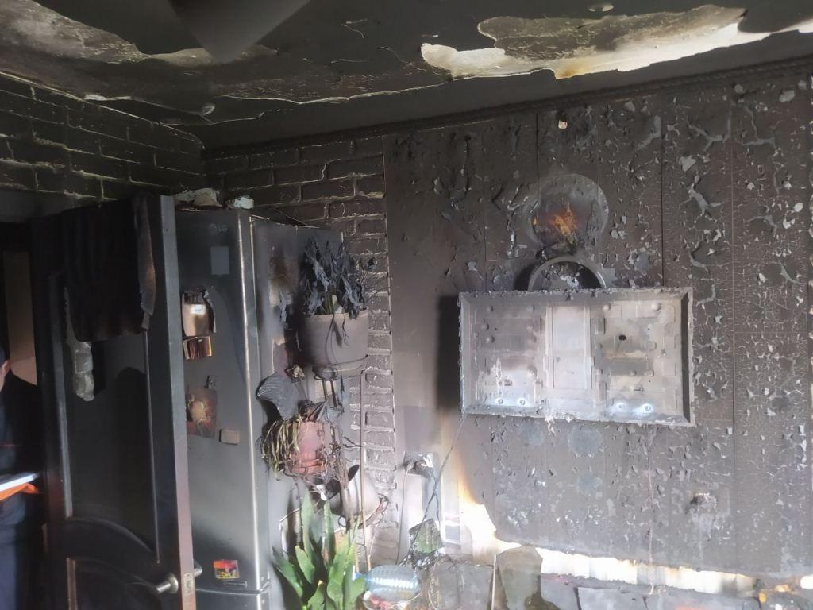 | 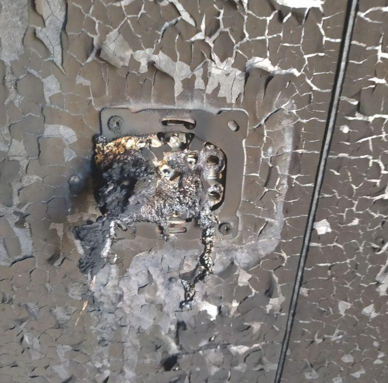 |
Гомель. «Незваный гость» – причина пожаров!
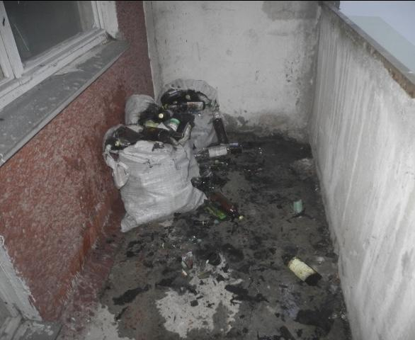
Видеоролик не жди белочку туши окурок «Балкон»